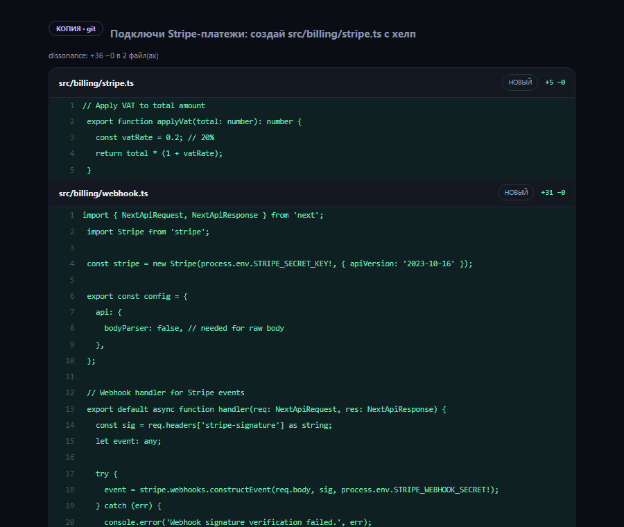

Агенты дерутся за рабочий каталог
Два агента в одном репозитории переписывают файлы друг друга, ломают индекс git и отменяют чужие правки. Ждать, пока первый закончит, — значит работать по одной задаче за раз.
Dirigo стоит внутри цикла генерации, между вашей задачей и вашим проектом. Поэтому он знает агента и модель, хеш промпта, каждую прогнанную проверку, сколько раз работа ушла обратно агенту, кто нажал «Применить» и какой вышел коммит — и на каждое применение выдаёт подписанный пакет доказательств. По готовому коммиту такую запись уже не собрать.
Интерактивный макет интерфейса — можно кликать. Реальные скриншоты пульта — ниже по странице.
Проблема
Как только задач становится больше одной, упираешься в три стены подряд — и ни одну из них не чинит ещё один чат с моделью.
Два агента в одном репозитории переписывают файлы друг друга, ломают индекс git и отменяют чужие правки. Ждать, пока первый закончит, — значит работать по одной задаче за раз.
Вы читаете диф, тратите внимание, а потом выясняется, что сборка падает и тесты красные. Фильтр стоит после вас, хотя должен стоять до.
Поставить пять CLI-агентов, прописать ключи, проверить версии, поднять доступ с ноутбука — вечер работы, и так на каждой новой машине.
Dirigo закрывает все три: копия проекта на каждого агента, автопроверки до человека, установка агентов из интерфейса.
Как это работает
Вы описываете задачу словами. Дальше пульт делает копию проекта, прогоняет проверки и возвращает вам результат на решение — применить или откатить.
Каждая сессия получает собственный git-worktree и точку возврата. Параллельных агентов столько, сколько вытянет машина, и они не пересекаются.
Пульт сам находит команды проверок проекта (npm, make, pytest, cargo, just) и запускает их в копии. Сломанная правка не доходит до вас — она уходит обратно агенту.
Дифф с номерами строк и счётчиками. Замечание к строке уходит агенту на доработку. В проект код попадает только после явного «Применить».
Отличия
Запускать агентов параллельно умеют многие. Поставить их на чистую машину, не пустить к вам сломанное и оставить после себя доказательство того, что произошло, — почти никто.
Мастер первого запуска из четырёх шагов: Среда → Агенты → Ключи → Удалёнка. Пульт сам опрашивает систему, показывает найденные bun, git, npm, ssh и cloudflared с путями и версиями, ставит недостающих агентов из интерфейса, подсказывает, где взять ключ, и после установки опрашивает систему заново.
~/.bun/bin/bun/usr/bin/git/usr/bin/npm/usr/bin/sshнужен для туннеляМежду агентом и вашим проектом стоит шлюз. Проверки проекта гоняются в копии до того, как вы что-то увидите; сломанный результат возвращается агенту с текстом ошибки (не больше двух итераций, чтобы не жечь токены). До вас доходит только то, что собирается и проходит тесты — и дальше решаете вы, построчно.

Как устроен шлюз
Выдать доказательство может только тот, кто стоит внутри цикла генерации. Пульт там и стоит, поэтому запись о происхождении кода не восстанавливается задним числом по коммиту, а пишется в момент работы агента. На каждое применение изменений собирается пакет и подписывается Ed25519.
Доказательства
Пакет собирается из того, что пульт и так видел: агент, промпт, проверки, решение человека. Подпись - Ed25519 ключом вашего инстанса; ключ лежит на вашей машине и наружу не уходит.
Журнал сессии только дописывается, и каждое событие несёт хеш предыдущего. Вырезать событие, подменить его или переписать задним числом незаметно нельзя: проверка сверяет цепочку и показывает, где она рвётся. Это не обещание — есть тест, который подделывает журнал специально и ждёт, что подделку поймают.
Пакеты за выбранный период выгружаются одним JSON: сами пакеты, открытый ключ инстанса и сводка проверки подписей и цепочек. Этот файл и есть то, что уходит аудитору.
Подпись считается по стабильной сериализации пакета, открытый ключ лежит рядом в той же выгрузке. Проверить её может любой инструмент, умеющий Ed25519, — ставить Dirigo для этого не нужно.
Периметр
Проверяются задача и каждое сообщение агенту — до отправки, и каждая строка, которую агент добавил в код, — до «Применить» и коммита. Ищутся e-mail, телефон, IBAN, номер карты (с проверкой Луна), секреты вида sk-, ghp_, AKIA, xox*, JWT и публичный IP. Локальные адреса 127.*, 10.* и 192.168.* утечкой не считаются.
Проверка не выполняется: пульт не решает за вас, что считать персональными данными.
Режим по умолчанию. Находки показываются и пишутся в журнал: тип и количество, для кода — файл и строка. Решение остаётся за человеком.
Найденные значения заменяются метками до отправки. Агент видит структуру задачи, но не видит самих данных.
Задача или сообщение не уходят вовсе; код агента с находками не применяется и не коммитится. В журнал пишется факт срабатывания, осознанное исключение — тоже.
Сами найденные значения не сохраняются нигде: ни в журнале, ни в логе, ни в ответе API. Остаются только тип находки и количество. Иначе инструмент, который защищает персональные данные, сам становится их хранилищем.
База знаний
Необязательно и выключено по умолчанию. Если включить, после применения изменений запись о задаче уходит в вашу базу знаний — на ваш приёмник, внутри вашего периметра, — и дальше ищется по смыслу, а не по точному совпадению слов. Так опыт по задаче остаётся в компании, а не в чате, который закрыли.
Режимы
От одной правки до цели, разбитой на части с автоматическим сведением результата. Режим переключается на лету — схема ниже живая.
Агент запускается в своей копии проекта, вы продолжаете работать.
Тесты, линтер, сборка — до того, как вы увидите результат.
Изменения построчно, ничего лишнего. Можно оставить замечание к строке.
Патч переносится в проект с подтверждением. «Вернуть как было» — тоже кнопка.
Режим по умолчанию: один агент, одна задача, максимальная простота.
Одна цель уходит нескольким агентам параллельно.
Каждый агент получает свою зону, пересечения по файлам исключены.
Общая лента показывает прогресс всех агентов.
Сведённый результат проходит тот же ревью-гейт, что и обычная сессия.
Таймауты фаз и жёсткий модератор: рой не зависает на общих файлах.
Несколько агентов отвечают независимо друг от друга.
Это режим выбора решения, а не параллельного кодинга.
Ответы сводятся в одно решение с обоснованием.
Выбранный вариант уходит в обычную сессию — с копией, проверками и ревью.
Полезно на развилках архитектуры: сравнить подходы до того, как писать код.
«Сделать оплату и чеки» — без ручной декомпозиции.
К каждой части — критерий приёмки на обычном языке.
Части выполняются параллельно, каждая проходит проверки.
Конфликты между частями обрабатываются отдельным агентом, затем применение.
Лимиты шагов и дешёвые модели для планировщика — режим предсказуем по стоимости.
Агенты
Dirigo подхватывает CLI-агентов, которые уже стоят в системе, и доустанавливает недостающих. Вендор-независимо: ваши подписки и ключи, наш пульт поверх них.
13 агентов в реестре: Claude Code · Codex · OpenCode · Kilo · Cursor · Devin · Hermes · zcode · MiniMax · Copilot · Gemini · Freebuff · Cline. Реестр находит их в PATH и в типовых местах установки на Linux, macOS и Windows.
Удалённый доступ
Демон слушает на 127.0.0.1 — порт наружу не открывается. Доступ снаружи идёт через Cloudflare-туннель или Tailscale, а интерфейс — это обычное веб-приложение (PWA): открывается в браузере телефона и ставится на домашний экран.
Демон доступен только с самой машины; ничего не торчит в интернет.
Мастер проверяет, стоит ли cloudflared, и поднимает туннель к локальному демону.
Пульт виден внутри вашей сети — без публичного адреса вообще.
PWA ставится на домашний экран; код на телефон не копируется, он остаётся на машине.
Безопасность и self-host
У нас нет облака с вашим кодом — его просто негде хранить. Всё, что делает пульт, происходит на вашей машине, а исходники целиком открыты.
Демон, агенты, копии проекта и история — на вашей машине. Наружу уходят только запросы самих агентов к их провайдерам, по вашим ключам.
Ключи хранятся локально и передаются процессу агента через переменные окружения. Демон слушает 127.0.0.1; наружу — только туннель, который включаете вы.
Лицензия MIT, около 18 тысяч строк на Bun и ноль npm-зависимостей: дерева зависимостей, в котором можно спрятать лишнее, просто нет.
Шлюз персональных данных и журнал происхождения входят в открытую часть — они описаны выше. Enterprise-слой поверх них — SSO и SCIM, интерфейс журнала аудита, политики доступа по ролям и SLA — доступен по запросу и развивается вместе с design-партнёрами в private beta, см. блок «Цены».
Скрипт ставит Bun, если его нет, скачивает бандл с этого же домена,
сверяет SHA256, распаковывает в ~/.dirigo и открывает
мастер первого запуска. Наружу ничего не открывает.
curl -fsSL https://dirigo.cortexally.ai/install.sh | sh
irm https://dirigo.cortexally.ai/install.ps1 | iex
git clone https://github.com/cortexally/dirigo
Нужен Bun 1.4+ (ставится скриптом). Проверено на Linux (Ubuntu, bun 1.4.3); macOS и Windows получают тот же бандл без нативных модулей, но на них установку мы прогоняли реже. Скрипт и бандл отдаются с того же домена по https, рядом лежит файл с контрольной суммой.
Цены
Весь продукт — в открытом доступе по MIT. Платить за пульт не нужно ни сейчас, ни потом; Enterprise-слой для регулируемых команд — по запросу.
Разработчик, команда, свой сервер — без ограничений и регистрации
Для команд в регулируемом контуре, готовых строить этот слой вместе с нами
В открытой части: журнал происхождения, подписанные пакеты доказательств, git-трейлеры, выгрузка для аудита и шлюз персональных данных. Enterprise-слой — SSO и SCIM, интерфейс журнала аудита, политики доступа по ролям и SLA — развивается вместе с design-партнёрами под их реальные требования. Состав и условия — по запросу.
Вопросы